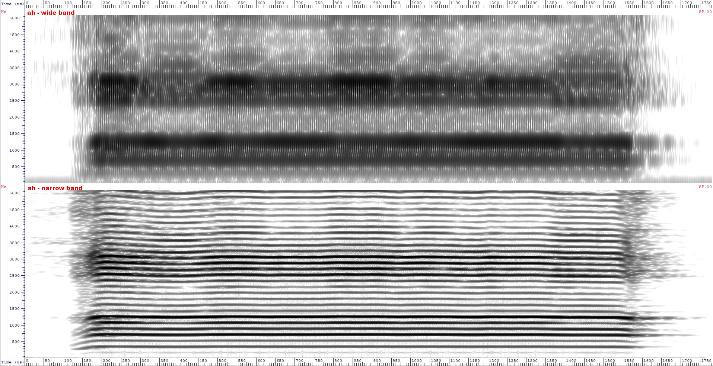
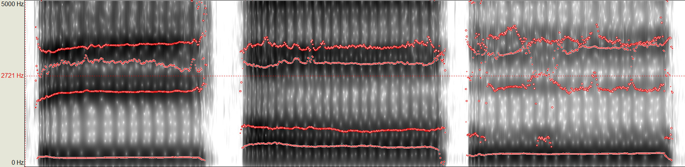
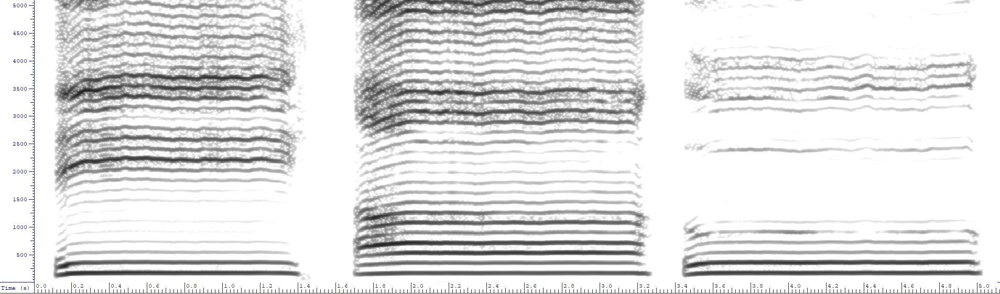

vowel resonator>
oo

ih
in ih gram, f1 is at around 411Hz and the f2 is at about 1998 Hz

ah
in ah gram - f1 is at about 320 Hz , f2 is about 722Hz


ih-ah-oo by me


Roughly i ( f1 = 300Hz, f2 = 2200 Hz), aa ( f1 = 630Hz, f3= 1200Hz), oo ( f1= 400 Hz, f2 = f2 = 900Hz)
these three are called the "cardinal vowels" for some reason
It is extremely easy to tell apart 'i' from 'a';
but telling apart 'a' from 'u' is a bit harder, as the only difference is that the 'u' formants are a bit lower than the 'a' formants
If anything sounds roughly like a 'i' or 'u', then it will have formants roughly like these.
in the i the f1 and f2 are far apart
in the a they are close together
in the u they are close together, but lower than the a
So int the grams of the three flutes, we expect to see the same formants BUT they will be slightly higher, because those flutes are too small to simulate your voice.
second point and very important
formants will always be at the same height regardless of fundamental frequency of input
because resonant frequency of a cavity depends only in itsshape
once you put your tongue in the ih position freqs near 300 and 2200 will be strengthened and freqs near 1000 will be weakended
regardless of how you make your cavity resonate, you can use vocal chords to make air vibrate, or a jew's harp, or blow into a didgeridoo, or put in a live bee, regardless of the vibrations that come in, if anything is near 300 or 2000 will resonate, near 1000 it will be deafened